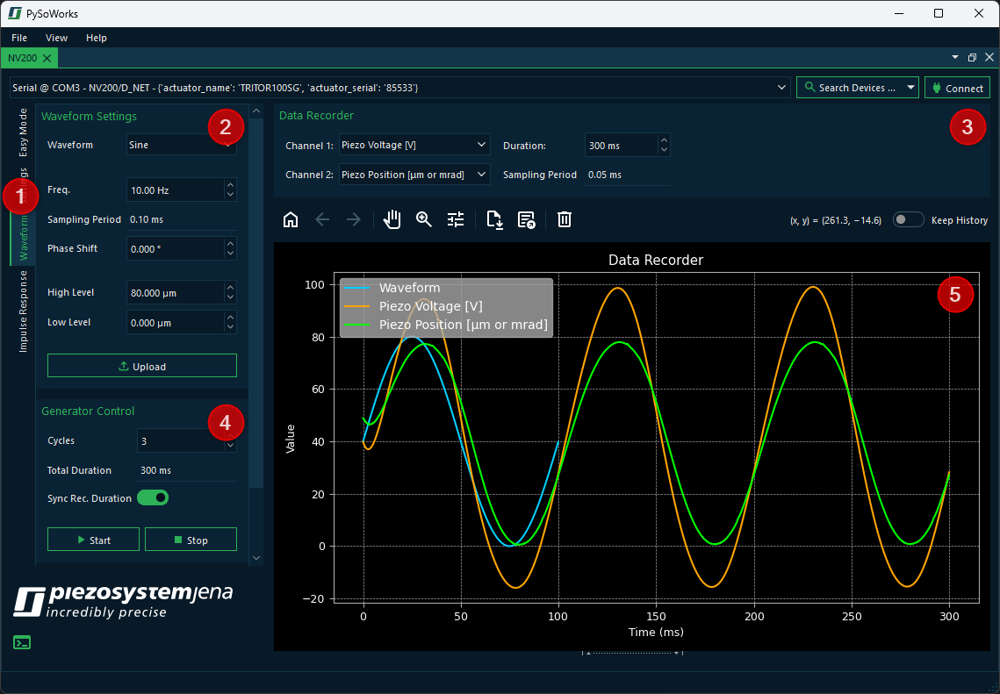
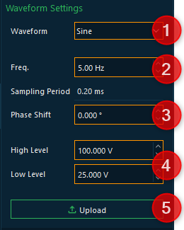
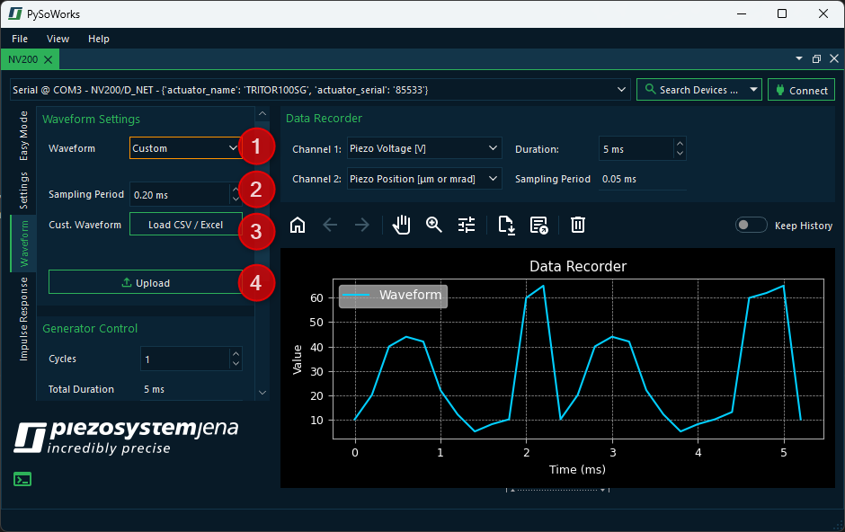
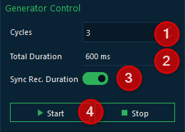

4. Waveform Generator
The NV200 device has an arbitrary waveform generator. This waveform generator can be used to generate a variety of waveforms. The arbitrary waveform generator can generate a single or repetitive setpoint signal. The curve shape can be freely defined by up to 1024 samples.
The waveform generator can be used in either open-loop or closed-loop mode. Before creating a waveform, please select the appropriate mode in the Easy Mode section or in the Settings panel. Depending on the selected mode, the waveform values must be entered in the software either as voltage values (V) or as position values.
You can show the Waveform panel by clicking the Waveform tab ❶. The Waveform UI has the following components:
- ❷ Waveform Settings
Allows you to select the waveform type and configure its parameters. Changed parameters are highlighted in orange. This indicates that you need to reupload the waveform to the generator.
- ❸ Data Recorder
Configure which data should be recorded during waveform playback.
- ❹ Generator Control
Configure the number of cycles the generator should repeat the waveform and start or stop the generator.
- ❺ Data Recorder Plot
Provides a visual representation of the generated waveform (light blue) that is updated as soon as the waveform parameters are changed. It also shows the recorded data (green, orange) recorded during waveform playback.
4.1. Generating a Waveform
With the software, you can generate predefined mathematical waveforms (sine, triangle, square) or load arbitrary waveforms from an Excel or CSV file. On the left side, in the Waveform Settings panel, you can select the desired waveform type and configure its parameters.
4.1.1. Generating a Standard Waveform
To generate a standard waveform, follow these steps:
In the Waveform combobox ❷, select the desired waveform type (e.g., sine, triangle, square).
Configure the waveform frequency as needed. The waveform preview (light blue) and the Sampling Period will be updated accordingly.
Select the desired phase shift in the Phase Shift field.
Configure the waveform amplitude using the High Level and Low Level fields.
Finally, click the Upload button to send the waveform to the device.
4.1.2. Loading an Arbitrary Waveform
If you want to load an arbitrary waveform, the steps are slightly different from generating a standard waveform:
In the Waveform combobox ❷, select the waveform type Custom.
Configure the Sampling Period - this determines how fast the sample values are processed in the device.
Click the Load CSV / Excel button to open a file dialog and then select the desired file. The waveform preview should show the loaded waveform (light blue).
Click the Upload button to send the waveform data to the device.
4.2. Running a Waveform
In the Generator Control section, you can control the waveform playback:
Configure the number of cycles in the Cycles field. This determines how many times the waveform will be repeated.
The total duration is updated automatically based on the number of cycles and the waveform frequency.
If you activate the Sync Rec. Duration switch, the recording duration will be synchronized automatically with the waveform duration.
Click the Start button to begin waveform playback and the Stop button to stop it.
4.3. Setting Up Data Recording
In the Data Recorder section, you can configure which data should be recorded during waveform playback:

Use the Channel comboboxes to select the desired recording sources for both channels.
Configure the recording duration. If the Sync Rec. Duration switch is activated in the Generator Control section, the recording duration will be synchronized automatically with the waveform duration.
The sampling period is updated accordingly. Longer recording durations lead to a lower sampling rate because the internal device data recorder is limited to 6144 data points.